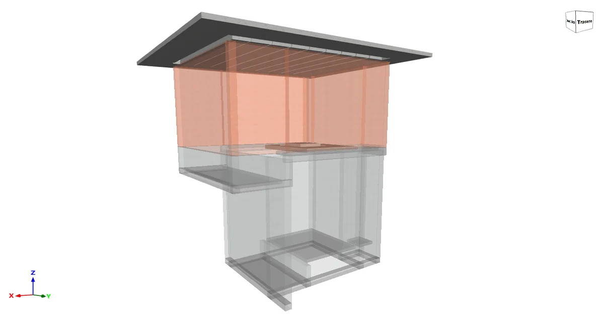
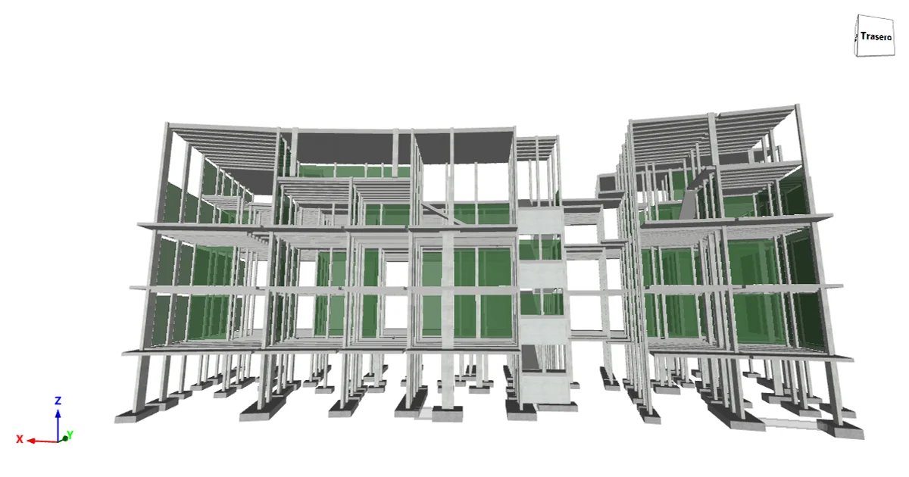
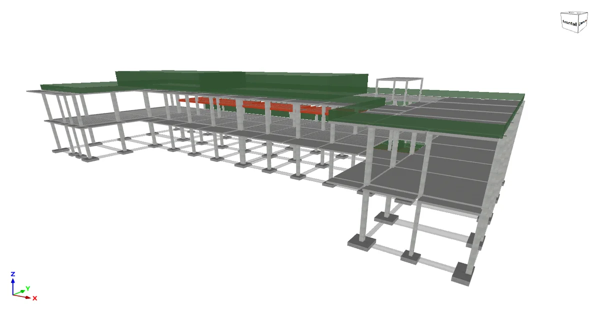
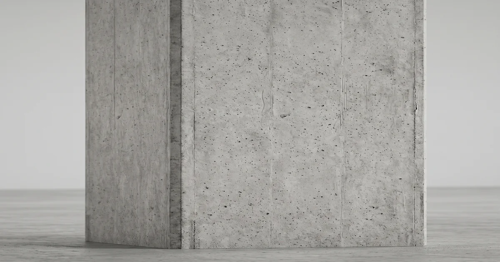
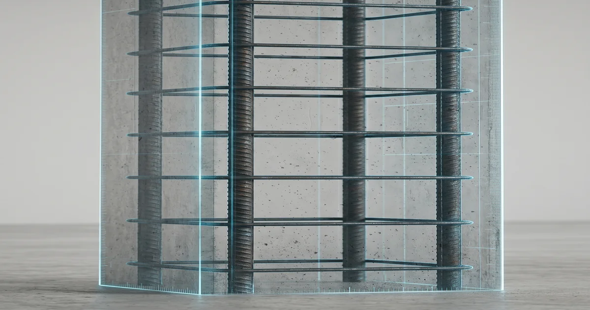

Cárcamo de aguas residuales 2026
Modelado y análisis en RFEM 6. Diseño de concreto reforzado.
Proyecto estructural, planos de obra e inspección de estructuras de concreto armado y acero, para arquitectos, constructoras, desarrolladores y propietarios en Cancún, la Riviera Maya y todo México.
Cada servicio termina en un entregable que puedes usar en obra.
Análisis y diseño de concreto armado, acero y mampostería con modelo 3D. Incluye memoria de cálculo firmada.
Planos técnicos de estructura de concreto armado o acero: armados, detalles y cimentación, en DWG y PDF.
Revisión de proyectos estructurales existentes y propuestas para reducir materiales y tiempos de ejecución dentro de la normativa aplicable.
Reporte de inspección con diagnóstico de patologías y propuesta de reforzamiento. Ver detalle.
Modelos y proyectos publicados en BIMserver Center. También publico avances en Instagram.

Modelado y análisis en RFEM 6. Diseño de concreto reforzado.

Diseño estructural completo en concreto reforzado y cimentación.

Diseño estructural en acero y concreto reforzado.
Arrastra para girar y usa la rueda o dos dedos para acercar.
Reporte de inspección de estructuras existentes: qué patologías presentan y cómo reforzarlas.


Pasa el cursor, desliza el dedo o usa las flechas del teclado para ver el armado interior.
El entregable es un reporte de inspección, no un dictamen pericial.
Consultar por WhatsAppSoy ingeniero civil especializado en estructuras de concreto armado, acero y mampostería, con base en Cancún. Trabajo directamente en cada proyecto, sin intermediarios.
Software: RFEM 6, AutoCAD, Revit, CYPE e IDEA StatiCa.
Normativa de referencia: ACI 318-25, NTC 2023 (CDMX), CFE 2020 y las Normas Técnicas Complementarias para Diseño y Construcción de Estructuras de Concreto del Reglamento de Construcción del Municipio de Benito Juárez, Q. Roo (septiembre de 2007).
Sí. Atiendo en persona en Cancún y de forma remota en todo México.
Sí. Revisión y optimización de proyectos estructurales existentes.
Depende del tamaño y las exigencias del proyecto. Como referencia, una casa habitación toma unos 10 días hábiles y una nave o estructura industrial unos 20 días hábiles, contados desde que tengo la información completa.
Escríbeme los detalles de tu obra. Lo más rápido es WhatsApp; si prefieres, usa el formulario.